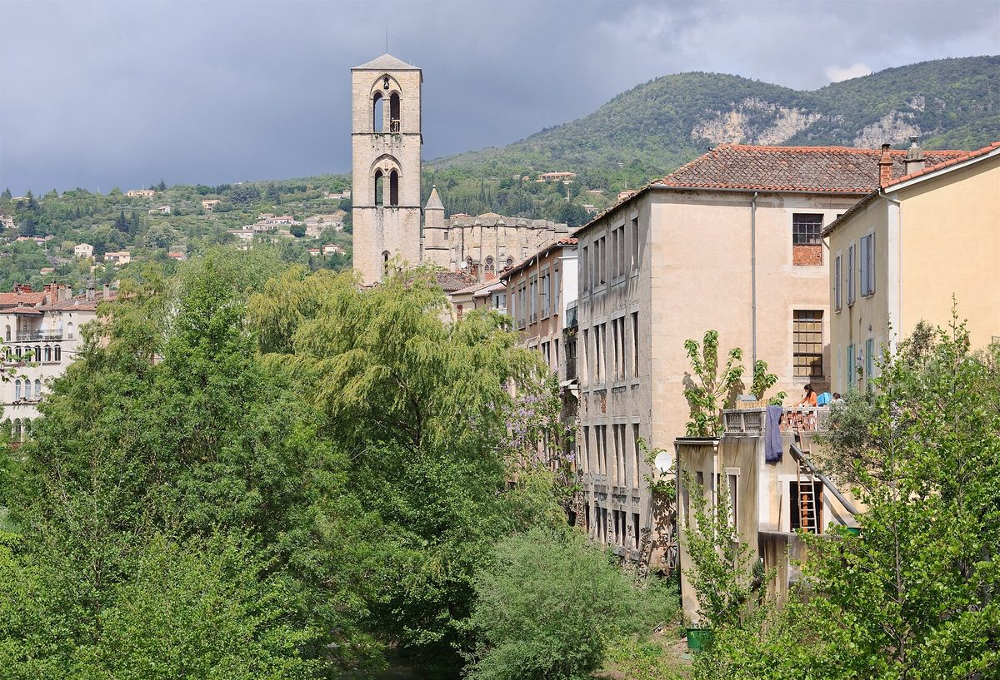

프랑스 로데브 시민협동조합, 옛 방직공장 지붕에 200kWc 태양광 추진…반경 10km 주민·상점·공공건물과 전기 나눈다

조합원 320명 솔레르 와트 로데부아, 전력회사에 모두 팔던 방식에서 집단 자가소비로…사업비 18만 유로 중 12만 유로를 100유로 출자·조합원 대여금으로 모아 2027년 가동 목표
프랑스 남부 옥시타니 에로주 로데브의 시민 협동조합 솔레르 와트 로데부아(Solaire Watt Lodévois)가 옛 방직공장 터 '레 물리나주' 지붕에 200kWc 태양광 발전소를 새로 짓고, 여기서 나온 전기를 로데브 반경 10km 안의 가정·상점·요양원·공공건물이 함께 쓰는 '집단 자가소비(ACC)' 방식으로 운영하기로 했다. 2021년 설립된 이 조합은 조합원 320명이 자원봉사 임원진과 함께 꾸려 왔으며, 그동안 같은 지붕에 100kWc 2곳과 250kWc 1곳(지붕 2,300㎡) 등 발전소 3곳을 세워 전기를 모두 전력회사에 팔아 왔다. 새 발전소는 지붕 1,000㎡를 더 써서 2027년 가동을 목표로 하며, 인근 공동주택 라 카미나드와 일로 베르 드 라 술롱드르가 생산·소비 묶음에 들어오고 운영 관리는 전문 협회 EMC2가 맡는다. 이번 단계 사업비는 18만 유로로, 조합은 지역 지원과 함께 부족한 12만 유로를 100유로부터 살 수 있는 출자증권과 조합원 대여금으로 모으고 있다. 은행 대출로도 나머지를 채울 수 있지만 이자를 조합원이 먼저 받게 하려고 조합원 자금을 우선 모은다는 것이 조합의 설명이다. 프랑수아 베유앵 이사(재무 담당)는 23일 저녁 주민 설명회에서 전기값은 지금보다 조금 낮은 수준이지만 국제 정세에 흔들리지 않는 안정된 요금이 될 것이라고 말했다.
시민에너지 관점
조합원 320명이 100유로 출자부터 시작해 지붕 3곳에 발전소를 세우고, 이제 그 전기를 반경 10km 이웃이 직접 나눠 쓰는 단계로 넘어갔다는 점이 눈에 띈다. 요금이 크게 내려가지 않는데 굳이 그럴 필요가 있느냐는 물음이 나올 수 있지만, 이 조합이 내세운 것은 할인이 아니라 국제 연료 가격에 흔들리지 않는 요금이고, 대출 이자 대신 조합원에게 이자를 돌려준다는 설계다. 전기를 팔아 수익만 나누는 데서 그치지 않고 주민이 생산과 소비의 주인이 될 때 발전소는 마을의 자산이 된다. 우리도 공공건물과 마을 지붕에서 나온 전기를 인근 주민과 시설이 함께 쓰는 제도부터 열어야 한다.
출처: Midi Libre 2026-10-24 Alain Mendez 원문 보기
フランス・ロデーヴの市民協同組合、旧紡績工場の屋根に200kWcの太陽光を計画…半径10km内の住民・商店・公共施設と電気を分け合う
組合員320人のソレール・ワット・ロデヴォワ、電力会社への全量売電から集団自家消費へ…事業費18万ユーロのうち12万ユーロを100ユーロからの出資と組合員貸付で集め、2027年の稼働を目指す
フランス南部オクシタニー地域圏エロー県ロデーヴの市民協同組合ソレール・ワット・ロデヴォワ（Solaire Watt Lodévois）は、旧紡績工場跡「レ・ムリナージュ」の屋根に200kWcの太陽光発電所を新設し、その電気をロデーヴから半径10km以内の家庭・商店・高齢者施設・公共建物が共同で使う「集団自家消費（ACC）」方式で運営することにした。2021年に設立されたこの組合は、組合員320人がボランティアの役員とともに運営しており、これまで同じ屋根に100kWc2カ所と250kWc1カ所（屋根2,300㎡）の計3カ所の発電所を建て、電気をすべて電力会社に売ってきた。新しい発電所は屋根をさらに1,000㎡使い、2027年の稼働を目指す。近くの集合住宅ラ・カミナードとイロ・ヴェール・ド・ラ・スロンドルが生産・消費のグループに加わり、運営管理は専門団体EMC2が担う。今回の事業費は18万ユーロで、組合は地域の支援に加え、不足する12万ユーロを100ユーロから買える出資証券と組合員貸付で集めている。残りは銀行融資でも賄えるが、利息をまず組合員が受け取れるよう組合員の資金を優先して集めるという。フランソワ・ベユアン理事（財務担当）は23日夜の住民説明会で、電気料金は今より少し安い程度だが、国際情勢に左右されない安定した料金になると述べた。
市民エネルギーの視点
組合員320人が100ユーロの出資から始めて屋根に3カ所の発電所を建て、今やその電気を半径10kmの隣人が直接分け合う段階に進んだことは注目に値する。料金が大きく下がらないのになぜそこまでするのかとの疑問も出るだろうが、この組合が掲げるのは値引きではなく国際燃料価格に揺さぶられない料金であり、銀行への利息の代わりに組合員へ利息を返すという設計だ。売電収益を分けるだけでなく、住民が生産と消費の主人になってこそ、発電所は地域の資産になる。韓国でも公共建物や集落の屋根で生まれた電気を近隣の住民と施設が共に使える制度から開くべきだ。
出典: ミディ・リーブル（Midi Libre） 2026-10-24 アラン・マンデス（Alain Mendez） 原文を読む
法国洛代沃市民合作社计划在旧纺织厂屋顶建200kWc光伏…与半径10公里内居民、商店和公共建筑分享电力
拥有320名社员的Solaire Watt Lodévois从全部卖给电力公司转向集体自发自用…18万欧元项目费中的12万欧元通过100欧元起的入股和社员借款筹集，目标2027年投运
法国南部奥克西塔尼大区埃罗省洛代沃（Lodève）的市民合作社Solaire Watt Lodévois决定在旧纺织厂旧址“Les Moulinages”的屋顶新建一座200kWc光伏电站，并以“集体自发自用（ACC）”方式运营，让洛代沃半径10公里内的家庭、商店、养老院和公共建筑共同使用所发电力。该合作社成立于2021年，由320名社员与志愿理事会共同经营，此前已在同一屋顶建成两座100kWc和一座250kWc（屋顶面积2,300平方米）共三座电站，所发电力全部卖给电力公司。新电站将再利用1,000平方米屋顶，目标2027年投运；附近的集合住宅La Caminade和Îlot Vert de la Soulondres将加入这一产销组合，运营管理由专业协会EMC2负责。本阶段项目费用为18万欧元，合作社在争取地区支持的同时，正通过100欧元起购的入股凭证和社员借款筹集缺口12万欧元。合作社表示，剩余资金也可以向银行贷款，但希望先让社员获得利息，因此优先向社员募资。理事兼财务负责人François Beillouin在23日晚的居民说明会上表示，电价只会比现在略低，但将成为不受国际局势左右的稳定价格。
市民能源视角
320名社员从100欧元入股起步，在屋顶建起三座电站，如今又迈向让半径10公里内的邻居直接分享电力的阶段，这一点值得关注。有人会问，电价降不了多少，何必如此；但这家合作社看重的不是折扣，而是不受国际燃料价格冲击的电价，以及把本该付给银行的利息返还给社员的设计。不只是分享卖电收益，而是让居民成为生产和消费的主人，电站才会成为当地的资产。韩国也应首先开放制度，让公共建筑和村庄屋顶所发的电能由附近居民和设施共同使用。
来源: 《南方自由报》（Midi Libre） 2026-10-24 Alain Mendez 查看原文
Citizen cooperative in Lodève, France, plans 200kWc solar plant on former textile mill roof to share power with residents, shops and public buildings within 10km
Solaire Watt Lodévois, with 320 members, moves from selling all its output to the utility to collective self-consumption; it is raising 120,000 euros of a 180,000-euro budget through shares from 100 euros and member loans, aiming to start in 2027
Solaire Watt Lodévois, a citizen cooperative in Lodève in the Hérault department of southern France's Occitanie region, plans to build a new 200kWc solar plant on the roofs of Les Moulinages, a former textile mill site, and to run it under collective self-consumption (ACC), with households, shops, care homes and public buildings within 10km of Lodève sharing the power. Founded in 2021 and run by 320 members with a volunteer board, the cooperative has already built three plants on the same roofs, two of 100kWc and one of 250kWc on 2,300 square metres, selling all their output to the utility. The new plant will use another 1,000 square metres of roof and is due to start in 2027; the nearby housing projects La Caminade and Îlot Vert de la Soulondres will join the producer-consumer group, and the specialist association EMC2 will handle operation and management. This phase costs 180,000 euros, and alongside regional support the cooperative is raising the missing 120,000 euros through shares available from 100 euros and loans from members. It says a bank could cover the rest, but it wants members to earn the interest first. Board member and treasurer François Beillouin told a public meeting on the evening of the 23rd that prices would be only slightly lower than today but stable and shielded from international events.
Citizen Energy View
That 320 members starting from 100-euro shares have put three plants on the roofs and are now moving to share the power directly with neighbours within 10km is worth noting. Some will ask why bother if bills barely fall, but what the cooperative offers is not a discount but prices that do not swing with global fuel markets, and a design that pays interest to members rather than to a bank. When residents become owners of both production and consumption, rather than just splitting sales revenue, a power plant becomes a community asset. Korea, too, should start by opening rules that let nearby residents and facilities share power generated on public and village roofs.
Source: Midi Libre 2026-10-24 Alain Mendez Read the original